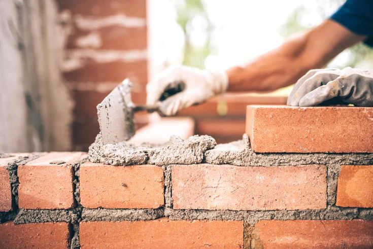
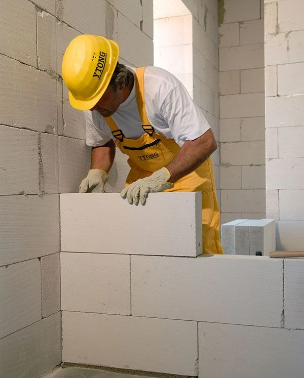

Création Web
Création Web
18 février 2026

Alizée Web, agence spécialisée dans la création de site internet pour artisans, crée des sites internet pour maçons optimisés pour le SEO local : vos futurs clients vous trouvent sur Google, consultent vos réalisations et vous contactent directement. Résultat : plus de demandes de devis, moins de prospection à froid.

En France, 7 maçons sur 10 n'ont pas de site internet. Pourtant, 90% des particuliers qui cherchent un maçon commencent leur recherche sur Google. Sans présence en ligne, vous êtes absent au moment précis où votre futur client décide de qui appeler.
Le bouche-à-oreille ne suffit plus. Les clients comparent, lisent les avis, regardent les réalisations en ligne avant de contacter quiconque. Un maçon avec un site professionnel et des photos de chantiers inspire confiance — et décroche le devis.
Alizée Web conçoit des sites spécialement pensés pour les maçons : galerie de réalisations mise en avant, pages de services détaillées (construction neuve, rénovation, extension, ravalement…) et SEO local pour vous positionner sur les requêtes de vos clients.

70%
Des maçons sans site internet en France
90%
Des clients cherchent leur maçon sur Google
3x
Plus de devis avec un site optimisé
Nous étudions votre zone d'intervention, vos spécialités (construction neuve, rénovation, extension, ravalement, dallage…) et vos concurrents locaux pour identifier les requêtes Google à cibler en priorité.
Nous concevons votre site maçon sur mesure : galerie de chantiers, pages services détaillées, formulaire de devis, avis clients et intégration Google Maps pour maximiser votre visibilité locale.
Votre site commence à générer des appels et demandes de devis en quelques semaines. Nous suivons vos positions Google et restons disponibles pour tout ajustement.
Un site internet pour maçon ne se résume pas à une belle vitrine. Il doit convaincre : un particulier qui envisage une extension ou une rénovation veut voir vos réalisations, lire vos avis et comprendre votre méthode de travail avant de vous appeler.
Chez Alizée Web, chaque page est structurée pour le SEO local et rédigée pour votre métier. Vos clients potentiels vous trouvent avant vos concurrents sur "maçon [ville]", "extension maison [ville]" et "rénovation [ville]".
Résultat : vos clients potentiels voient vos réalisations en photos, lisent vos avis, vérifient vos certifications et vous contactent directement. Moins de prospection, plus de chantiers signés. Découvrez aussi nos pages dédiées à la création de site internet couvreur et de site internet plaquiste.

Devis gratuit sous 24h — Sans engagement — Accompagnement humain de A à Z
Création Web
 SEO Local
SEO Local
 Google Business
Google Business